The aim of this tutorial is to demonstrate the solution of the time-harmonic equations of linear elasticity in cylindrical polar coordinates, using a Fourier decomposition of the solution in the azimuthal direction. These equations are useful to describe forced, time-harmonic, non-axisymmetric oscillations of axisymmetric elastic bodies.
Theory
Consider a three-dimensional, axisymmetric body (of density  , Young's modulus
, Young's modulus  , and Poisson's ratio
, and Poisson's ratio  ), occupying the region
), occupying the region  whose boundary is
whose boundary is  . Assuming that the body performs time-harmonic oscillations of frequency of
. Assuming that the body performs time-harmonic oscillations of frequency of  , we use cylindrical coordinates 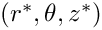. The equations of time-harmonic linear elasticity can then be written as
, we use cylindrical coordinates 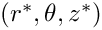. The equations of time-harmonic linear elasticity can then be written as
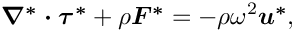
where 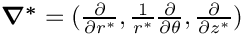, and the stresses, body force and displacements are given by 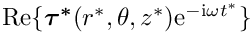, 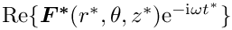 and 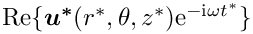 respectively. Note that here and henceforth, the superscript asterisk notation is used to distinguish dimensional quantities from their non-dimensional counterparts where required. (The coordinate  is by definition dimensionless, and so we do not use an asterisk when referencing this parameter).
is by definition dimensionless, and so we do not use an asterisk when referencing this parameter).
The body is subject to imposed time-harmonic displacements  along
along  , and subject to an imposed traction 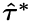 along 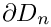 where 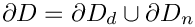 so that
, and subject to an imposed traction 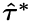 along 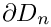 where 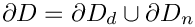 so that
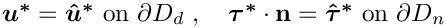
where  is the outer unit normal on the boundary.
is the outer unit normal on the boundary.
The stresses and displacements are related by the constitutive equations
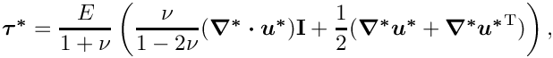
where 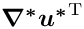 represents the transpose of 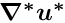. Note that in cylindrical coordinates, the second-order tensor is given by
![\[ \mbox{\boldmath$ \nabla^* u^*$}= { \left(\begin{array}{ccc} \frac{\partial u^*_r}{\partial r^*}& \frac{1}{r^*}\frac{\partial u^*_r}{\partial\theta}-\frac{u^*_\theta}{r^*}& \frac{\partial u^*_r}{\partial z^*}\\ \frac{\partial u^*_\theta}{\partial r^*}& \frac{1}{r^*}\frac{\partial u^*_\theta}{\partial\theta}+\frac{u^*_r}{r^*}& \frac{\partial u^*_\theta}{\partial z^*}\\ \frac{\partial u^*_z}{\partial r^*}& \frac{1}{r^*}\frac{\partial u^*_z}{\partial\theta}& \frac{\partial u^*_z}{\partial z^*}\end{array}\right) } \]](form_23.png)
and 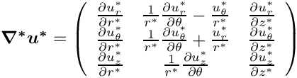 is equal to the trace of this matrix.
We non-dimensionalise the equations, using a problem specific reference length, 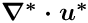, and a timescale 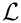, and use Young's modulus to non-dimensionalise the body force and the stress tensor:
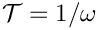
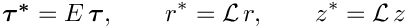
The non-dimensional form of the linear elasticity equations is then given by
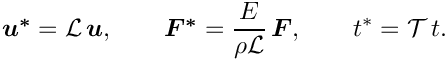
where 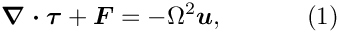,
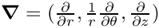
and the non-dimensional parameter
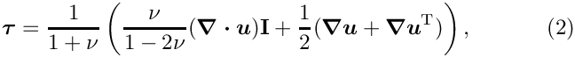
is the ratio of the elastic body's intrinsic timescale, 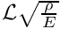, to the problem-specific timescale, , that we used to non-dimensionalise time. The boundary conditions are
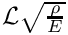
Given the assumed axisymmetry of the body we expand all quantities in a Fourier series in the azimuthal coordinate by writing,
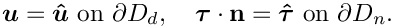
This decomposition allows us to remove the -dependence from the equations by writing 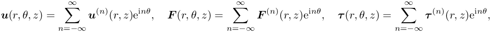, where 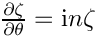 represents any physical parameter in the problem. Furthermore, since the governing equations are linear, we can solve for each Fourier component separately and simply specify the Fourier wavenumber  as a parameter.
as a parameter.
Implementation
Within oomph-lib, the non-dimensional version of the two-dimensional Fourier-decomposed equations (1) with the constitutive equations (2) are implemented in the TimeHarmonicFourierDecomposedLinearElasticityEquations equations class. Following our usual approach, discussed in the (Not-So-)Quick Guide, this equation class is then combined with a geometric finite element to form a fully-functional finite element. For instance, the combination of the TimeHarmonicFourierDecomposedLinearElasticityEquations class with the geometric finite element QElement<2,3> yields a nine-node quadrilateral element. As usual, the mapping between local and global (Eulerian) coordinates within an element is given by,
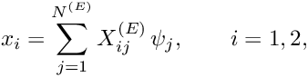
where the coordinates are enumerated as 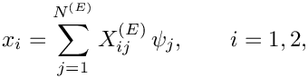. 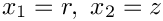 is the number of nodes in the element,  is the
is the  -th global (Eulerian) coordinate (enumerated as above) of the
-th global (Eulerian) coordinate (enumerated as above) of the  -th
-th Node in the element, and the  are the element's shape functions, defined in the geometric finite element.
are the element's shape functions, defined in the geometric finite element.
We allow for the presence of damping by allowing the constitutive parameters and forcing frequency to be complex-valued. The three components of the displacement field therefore have real and imaginary parts and we store the six real-valued nodal unknowns in the order 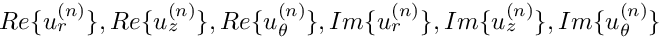 and use the shape functions to interpolate the displacements as
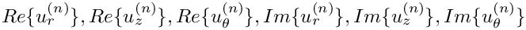
where  is the -th displacement component (enumerated as indicated above) at the -th
is the -th displacement component (enumerated as indicated above) at the -th Node in the element.
The test problem
The governing equations are fairly complicated and it is difficult to come up with non-trivial analytical solutions that could be used to validate the implementation. We therefore construct an analytical solution by postulating a displacement field and providing a body force that makes this a solution of the equations.
Specifically we consider the time-harmonic non-axisymmetric deformation of an annular elastic body that occupies the region 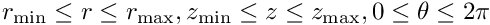.
The displacement field
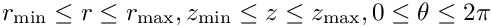
is an exact solution of the governing equations if the body is subject to a body force
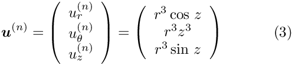
where 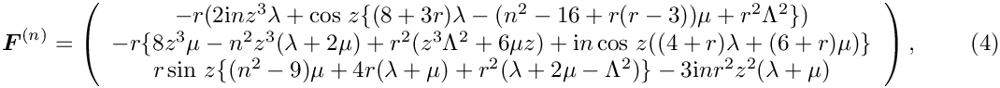 and 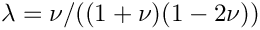 are the non-dimensional Lamé parameters (non-dimensionalised on ). The body is subject to a non-zero traction on all four boundaries; for example, on the inner boundary (where 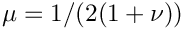) the traction is
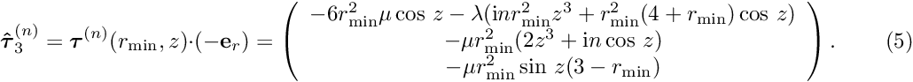
We choose to set this traction as a boundary condition, whilst pinning the displacements on the remaining boundaries where we impose a prescribed displacement according to (3).
Results
The figures below show plots of 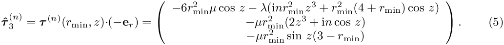 and 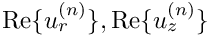 for a Fourier wavenumber of 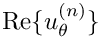 and geometric parameters 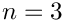. We set 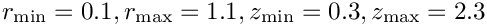, corresponding to an exponentially growing time-periodic forcing; 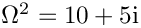, corresponding to a slightly dissipative material (see Comments ); and 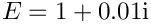. The imaginary part of the solution is small (though not identically equal to zero) but it converges to zero under mesh refinement; see Exercises .


Global parameters and functions
As usual, we define all non-dimensional parameters in a namespace. In this namespace, we also define the (Fourier-decomposed) body force, the traction to be applied on boundary 3, and the exact solution. Note that, consistent with the enumeration of the unknowns, discussed above, the order of the components in the functions that specify the body force and the surface traction is 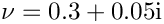.
The driver code
We start by setting the number of elements in each of the two coordinate directions before creating a DocInfo object to store the output directory.
We build the problem using two-dimensional QTimeHarmonicFourierDecomposedLinearElasticityElements, solve using the Problem::newton_solve() function, and document the results.
The problem class
The Problem class is very simple. As in other problems with Neumann boundary conditions, we provide separate meshes for the "bulk" elements and the face elements that apply the traction boundary conditions. The latter are attached to the relevant faces of the bulk elements by the function assign_traction_elements().
The problem constructor
We begin by building the meshes and pin the displacements on the appropriate boundaries. Recall that the order of the six real unknowns stored at the nodes is 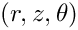
Next we loop over the bulk mesh elements and assign the constitutive parameters, the body force, the Fourier wavenumber and the non-dimensional frequency to each element.
We then loop over the traction elements and specify the applied traction.
The two sub-meshes are now added to the problem and a global mesh is constructed before the equation numbering scheme is set up, using the function assign_eqn_numbers().
The traction elements
We create the face elements that apply the traction to the boundary .
Post-processing
As expected, this member function documents the computed solution.
Comments and Exercises
Comments
- Given that we non-dimensionalised all stresses on Young's modulus it seems odd that we provide the option to specify a non-dimensional Young's modulus via the member function
TimeHarmonicFourierDecomposedLinearElasticityEquations::youngs_modulus_pt(). The explanation for this is that this function specifies the ratio of the material's actual Young's modulus to the Young's modulus used in the non-dimensionalisation of the equations. The capability to specify such ratios is important in problems where the elastic body is made of multiple materials with different constitutive properties. If the body is made of a single, homogeneous material, the specification of the non-dimensional Young's modulus is not required – it defaults to 1.0. In the example considered above, the specification of the non-dimensional Young's modulus as 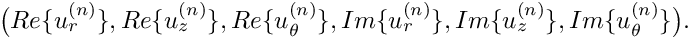
creates a small amount of damping in the material whose actual stiffness is still characterised by the (real-valued and dimensional) Young's modulus used to non-dimensionalise the equations. - Note that we also allow Poisson's ratio (whose specification is required) to be complex-valued. We are not aware of any meaningful physical interpretation of non-real Poisson ratios but provide this option because it appears to allow a better characterisation of some materials.
Exercises
- Confirm that the specification of Poisson's ratio is required: What happens if you comment out its assignment in the problem constructor?
- Confirm that the small imaginary part of the computed displacement field for the test problem goes to zero under mesh refinement.
- Change the problem setup to the (less contrived) case where the deformation of the cylinder is driven by a time-periodic pressure load acting on the inside while its upper and lower ends are held at a fixed position. (You can cheat – there's another tutorial that shows you how to do it...).
Source files for this tutorial
- The source files for this tutorial are located in the directory:
demo_drivers/time_harmonic_fourier_decomposed_linear_elasticity/cylinder/ - The driver code is:
demo_drivers/time_harmonic_fourier_decomposed_linear_elasticity/cylinder/cylinder.cc
PDF file
A pdf version of this document is available.